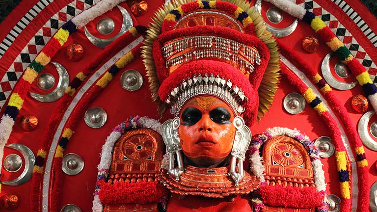

Geographic and Demographic
Geographic and Demographic

To its south is the Kannur District renowned for its ritual arts like Theyyam. Dakshina Kannada district of Karnataka known for its Yakshagana dance forms the northern boundary. The mighty Western Ghats forms a wall along the eastern side. The western side is eternally caressed by the supple hands of Arabian Sea. Covering an area of 1992 km² the district is home to 1,203,342 people (according to 2001 census). There are two taluks in Kasaragod, namely Kasaragod and Hosdurg, and both are municipalities. Seventy-five villages and thirty-nine panchayats make this district which is further subdivided into six administrative segments called development blocks. These six development blocks are Manjeshwar, Kasaragod, Kanhangad, Nileshwar, Parappa and Karadukkal. Just like the thirteen other states of Kerala Kasaragod also has a high literacy rate.